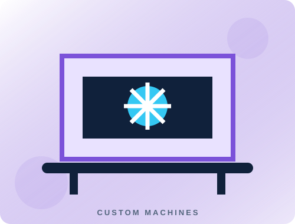
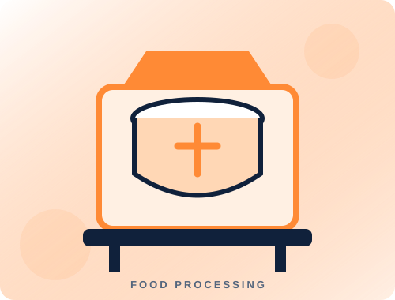

Explore CNC machine solutions designed for cutting, routing and repeatable workshop production. We can discuss machine size, working area, control system and intended materials around your needs.
Use this page to present your actual machine model, fabrication photos, cutting demonstrations and specifications. Replace the sample image with your own clear workshop and finished-machine photos.
Key features
Machine configuration tailored to the required application
Control and motion components selected for the build
Support for setup, testing and operator familiarisation
Custom working area and options based on project scope
Photo gallery


Machine demonstration video
Replace this box with a YouTube video embed or a video file you own.